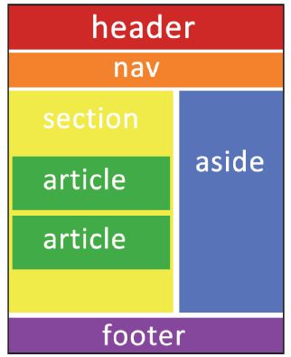

Web Etiquetas Básicas de HTML5, Atributos y Valores
Web Etiquetas Básicas de HTML5, Atributos y Valores

HTML5
El lenguaje HTML, es un lenguaje de marcas o etiquetas. Esto quiere decir que los elementos que conforman la página web se describen mediante palabras especiales que marcan el inicio y el final de los mismo, estas palabras se denominan Etiqueta. En definitiva, en HTML5 se incorporan las siguientes etiquetas semánticas:• <header>… </header> para definir la cabecera de la página
• <footer>… </footer> para definir el pie de página. Normalmente contiene datos sobre quien ha creado la página, datos del copyright
• <nav>… </nav> permite definir un elemento de navegación de la página web, como el menú principal o menús secundarios.
• <section>… </section> se utilizan para encerrar el código correspondiente a una sección genérica dentro de un documento.
• <aside>… </aside> sirve para delimitar todo aquel contenido que no es directamente contenido principal de esa página en concreto. Puede usarse por tanto para todos aquellos elementos secundarios como bloques publicitarios, enlaces externos, citas, un calendario, etc.
• <article>… </article> se utiliza para definir artículos como noticias, entradas de un blog, es probablemente uno de los más importantes de HTML5, y a que permite indicar cuál es el contenido de una página web
